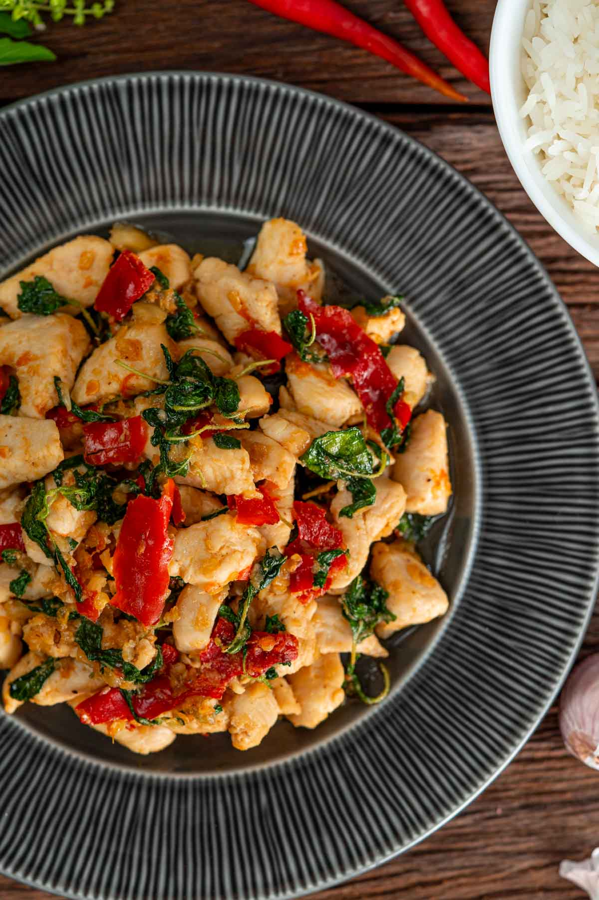

Thai Holy Basil Chicken

Thai holy basil chicken is a dish bursting with flavor and easy to make. Together with rice, it makes the perfect weeknight meal and is something you’ll make on repeat!
INGREDIENTS
- ¼ teaspoon white peppercorns
- 7 cloves garlic peeled
- 5 bird's eye chilis
- 10.6 ounces chicken cut into bite-sized pieces
- 1 tablespoon cooking oil
- 1 teaspoon oyster sauce
- 1 tablespoon fish sauce
- ½ teaspoon sugar
- 1 cup holy basil leaves about 4 stalks
INSTRUCTIONS
- In a mortar, pound the white peppercorns, garlic and chilies in this order with a pestle until quite coarse.
- Heat oil in a wok over medium heat.
- Once the oil is hot, add the pounded white peppercorns, garlic, and chilies and stir until fragrant, about 1-2 minutes.
- Add chicken and stir until cooked.
- Season with oyster sauce, fish sauce and sugar.
- Add holy basil leaves and stir until wilted. Turn off the heat and transfer to a plate or over rice to serve.
Return to recipes list